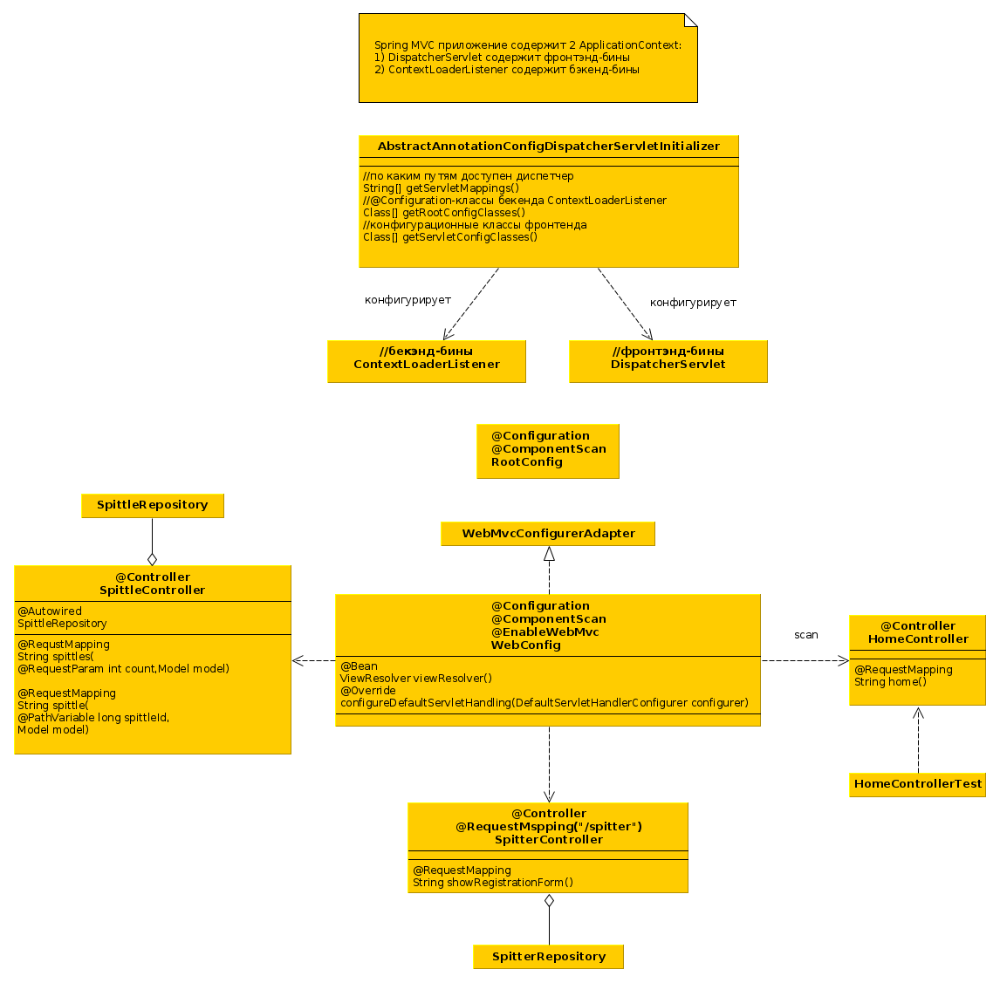

Spring MVC

- DispatcherServlet - это единая точка входа в спринг приложение. В него попадают все запросы клиентов.
- DispatcherServlet консультируется с набором HandlerMapping чтобы определить какой Controller должен обработать запрос.
- Controller использует данные запроса и модель чтобы обработать запрос.
- Контроллер возвращает модель (отображаемые пользователю данные) и имя представления, которое будет отрисовывать модель.
- DispatcherServlet консультируется с ViewResolver, чтобы найти нужный view по его имени. Т.о. контроллер и представление полностью разделены.
- Выбранный view использует модель чтобы сформировать html-ответ клиенту 7.
Configure DispatcherServlet
-
ContextLoaderListener создает ApplicationContext, доступный всем DispatcherServletам (если их несколько), DispatcherServlet создает вложенный AppCtx, содержащий контроллеры, ViewResolvers и прочее (веб бины). 
-
Spittr - это веб приложение типа твиттера, spitters - это пользователи приложения, а spittlets - это краткие обновления статусов пользователей.
-
Controller - это бин аннотированный @Controller, методы бина аннотируются через @RequestMapping, которая определяет какие пути обслуживает данный контроллер.
-
Model - это набор пар ключ-значение, передаваемых представлению. Вместо model можно использовать обычный Map.
-
В представлении данные модели доступны через JSTL как параметры запроса ${spittleList}
-
Способы передачи данных в контроллер:
1 При помощи параметров запроса:
@RequestParam(name = "count",defaultValue = "2") int count2 При помощи параметров адреса:
@RequestMapping(path = "/spittles/{spittleId}", method = RequestMethod.GET) //GET /spittles/12345 public String spittle( @PathVariable("spittleId") long spittleId, Model model) { ...}3 Можно напрямую использовать HttpServletRequest:
public String register(HttpServletRequest request) { ... }validators
- Spring 3.0 поддерживает Java Validation API в
spring MVC, чтобы использовать апи, нжно:
- Добавить в cp реализацию апи
- Аннотировать параметры Spitter спец. аннотациями.
- Внести изменения в метод регистрации.
- Spring 3.0 поддерживает Java Validation API в
spring MVC, чтобы использовать апи, нжно: